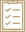
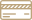

Сервисный центр Perfect проводит гарантийный и платный ремонт всех моделей часов Longines. Мы соблюдаем технический регламент фабрики-производителя и используем оригинальные детали и швейцарское оборудование. Качество работы контролируется фабрикой-производителем.
3-5 лет
Рекомендуем проводить сервисное обслуживание каждые 3-5 лет.
2 года гарантии
Даем 2 года гарантии при ремонте часов. Если вы покупаете часы у нас, то в дальнейшем получаете дополнительные гарантии и льготы на обслуживание.
10 дней — срок ремонта
при наличии необходимых деталей. При их отсутствии на складе, срок определяется сроками поставки с фабрики-производителя и может составлять от 2-х недель до нескольких месяцев.
Цены на ремонт часов Longines
Ремонт часов производится по ценам, установленным фабрикой Longines. Расчет примерной стоимости ремонта осуществляется мастером-приёмщиком при первичной диагностике часов. Стоимость ремонта может быть скорректирована после полной разборки часов и осмотра всех деталей на предмет повреждения или износа. В большинстве случаев предварительная диагностика не нуждается в корректировке. Стоимость ремонта часов Longines зависит от модели часов, сложности механизма и года их выпуска
| Тип часов longines | полный ремонт | мелкий ремонт |
|---|---|---|
| Механические, ручной завод | 14 500 ₽ | 4 500 ₽ |
| Механические, автоподзавод | 17 500 ₽ | 4 000 ₽ |
| Механические, хронограф | 27 000 ₽ | 6 500 ₽ |
| Кварцевые, хронограф | 14 500 ₽ | 4 500 ₽ |
| Кварцевые, 2/3 стрелки, дата | 20 000 ₽ | 4 500 ₽ |
| Кварцевые, сложные | 23 500 ₽ | 6 500 ₽ |
| Кварцевые, хронограф / автокварц | 31 000 ₽ | 6 500 ₽ |
| Часы с усложнениями (фаза луны) / двойной указатель даты | 35 500 ₽ | 6 500 ₽ |
| Часы с усложнениями (ретроград) | 20 000 ₽ | 6 500 ₽ |
| Часы с перламутровым циферблатом / Винтажные часы | По оценке | По оценке |
| Золотые часы | Наценка 50% | Наценка 50% |
 Что входит в стоимость ремонта
- полная разборка корпуса и механизма часов;
- проверка деталей корпуса и механизма на отсутствие повреждений и износа;
- промывка разобранного механизма в моечной машине с использованием специального раствора;
- сборка, смазка, проверка функционирования и регулировка механизма;
- чистка корпуса и браслета;
- восстановление внешнего вида корпуса и браслета (полировка), если техническим регламентом предусмотрена такая возможность;
- сборка часов и проверка герметичности корпуса часов;
- всестороннее тестирование работы часов на диагностическом стенде на соответствие техническим параметрам, установленным фабрикой Omega
Что невходит в стоимость
Стоимость изношенных и поврежденных деталей корпуса и механизма часов, подлежащих замене. Необходимость замены определяется мастером по результатам осмотра деталей после полной разборки часов.
Детали оплачиваются отдельно по ценам фабрики Longines. Замененная деталь возвращается заказчику вместе с часами.
 Порядок оплаты заказанных деталей и выполненной работы
В случае отсутствия детали на складе сервисного центра Perfect, она может быть заказана в Швейцарии на фабрике Longines. Заказчик осуществляет предоплату детали и вносит авансовый платеж в размере 100 процентов ее стоимости.
Оплата ремонта часов, выполненного сервисноым центром Perfect, производится при получении заказчиком отремонтированных часов.
Гарантия на выполненные работы за плату
На все выполненные ремонты часов Longines за плату сервисному центру Perfect предоставляет гарантию на срок 24 месяца. В случае обнаружения недостатков в работе, подпадающих под действие нашей гарантии, сервисный центр Perfect после выявления причины неисправности бесплатно устранит этот недостаток, отремонтирует или заменит неисправную деталь.
Любые другие требования, заявляемые как результат некачественно выполненных сервисных работ, отклоняются.
Данная гарантия не распространяется на естественный износ и повреждения, вызванные неосторожным или небрежным обращением с часами. Гарантия теряет силу, если к работе над часами были допущены лица, не являющиеся сотрудниками сервисного центра Perfect .
На ремонты, произведенные в рамках международной гарантии фабрик-производителей, гарантия сервисного центра Perfect не распространяется.